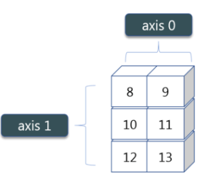
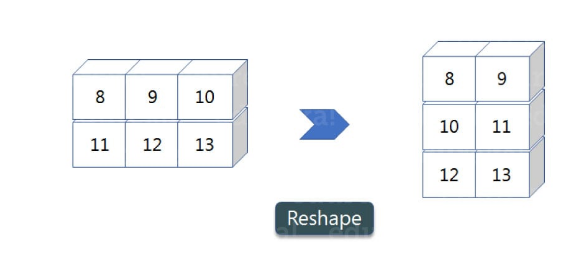

Array Operations¶
# import numpy
import numpy as np
Copy¶
Copies array to new memory
Syntax:
np.copy(array)
# create an array `A1`
A1 = np.arange(10)
print(A1)
# copy `A1` into A2
A2 = np.copy(A1)
print(A2)
View¶
Creates view of array elements with type(dtype)
Syntax:
array.view(np.dtype)
# view of array A2
A3 = A2.view(np.float16)
print(A3)
Sorting¶
Returns a sorted copy of an array.
Syntax:
array.sort()element-wise sorting(default)
axis = 0; row
axis = 1; column 
# Unsorted array
A4 = np.array([9, 2, 3,1, 5, 10])
print(A4)
# Call sort function
A4.sort()
print(A4)
# Row and column unsorted
A5 = np.array([[4, 1, 3], [9, 5, 8]])
print(A5)
# Apply sort function on column axis=1
A5.sort(axis=1)
print(A5)
Flatten: Flattens 2D array to 1D array¶
# 2D array
A6 = np.array([[4, 1, 3], [9, 5, 8]])
# 1D array
A6.flatten()
Transpose: Transposes array (rows become columns and vice versa)¶
A7 = np.array([[4, 1, 3], [9, 5, 8]])
A7
# Transpose A7
A7.T
Reshape: Reshapes arr to r rows, c columns without changing data¶

A8 = np.array([(8,9,10),(11,12,13)])
A8
# Reshape --> 3x4
A8.reshape(3,2)
Resize: Changes arr shape to rxc and fills new values with 0¶
A9 = np.array([(8,9,10),(11,12,13)])
A9
# Resize
A9.resize(3, 2)
A9
import numpy as np
Arithmetic Operations¶
If the dimensions of two arrays are dissimilar, element-to-element operations are not possible. However, operations on arrays of non-similar shapes is still possible in NumPy, because of the broadcasting capability. We will see what broadcasting is in the upcoming lessons.
a = np.array([10,10,10])
b = np.array([5,5,5])
a + b
array([15, 15, 15])
a - b
array([5, 5, 5])
a * b
array([50, 50, 50])
a / b
array([2., 2., 2.])
a % 3
array([1, 1, 1])
a < 35
array([ True, True, True])
a > 25
array([False, False, False])
a ** 2
array([100, 100, 100])
dot function or method¶
A = np.array( [[1,1],[0,1]] )
B = np.array( [[2,0], [3,4]] )
print('A:\n', A)
print('B:\n', B)
A:
[[1 1]
[0 1]]
B:
[[2 0]
[3 4]]
This gives element-wise multiplication¶
A * B
array([[2, 0],
[0, 4]])
This gives the matrix multiplication¶
A.dot(B)
array([[5, 4],
[3, 4]])
np.dot(A,B)
array([[5, 4],
[3, 4]])
Modifying an existing array rather than create a new one¶
a *= 3
a
array([30, 30, 30])
b += a
b
array([35, 35, 35])
Unary Operators¶
ages = np.array([12,15,18,20])
ages.sum()
65
ages.min()
12
ages.max()
20
By default, these operations apply to the array as though it were a list of numbers, regardless of its shape. However, by specifying the axis parameter you can apply an operation along the specified axis of an array
numbers = np.arange(12).reshape(3,4)
numbers
array([[ 0, 1, 2, 3],
[ 4, 5, 6, 7],
[ 8, 9, 10, 11]])
Row and column operations¶
In a 2D array axis #0 represents columns. Axis #1 refers to rows
Sum up each column¶
numbers.sum(axis=0)
array([12, 15, 18, 21])
Sum up each row¶
numbers.sum(axis=1)
array([ 6, 22, 38])
Minimum of each row¶
numbers.min(axis=1)
array([0, 4, 8])